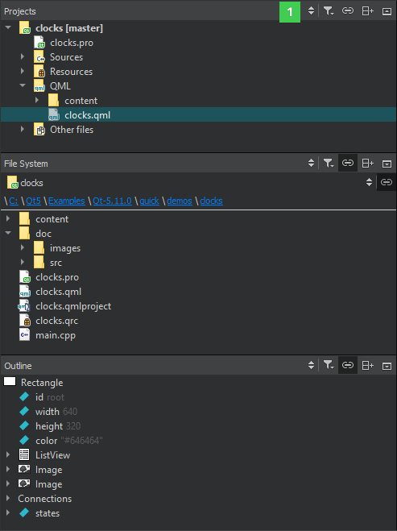
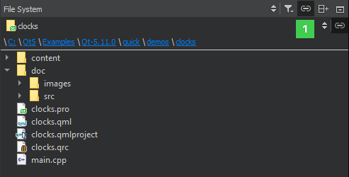
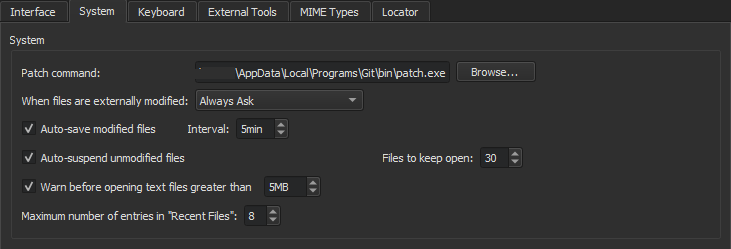

Browsing Project Contents
A left and right sidebar are available in most Qt Creator modes. The availability of the sidebars and their contents depend on the mode.
In the Edit and Design mode, you can use the sidebars to browse the project contents.

You can select the contents of the sidebars in the sidebar menu (1):
- Projects shows a list of projects open in the current session and the project files needed by the build system.
- Open Documents shows currently open files.
- Bookmarks shows all bookmarks for the current session.
- File System shows all files in the currently selected directory.
- Git Branches shows the local and remote brances for the project in the Git version control system. For more information, see Working with Branches.
- Outline shows an overview of defined types and other symbols, as well as their properties and hierarchy in a source file.
The following views display additional information about C++ code:
- Class View shows the class hierarchy of the currently open projects.
- Tests lists autotests and Qt Quick tests in the project. For more information, see Running Autotests.
- Type Hierarchy shows the base classes of a class.
- Include Hierarchy shows which files are included in the current file and which files include the current file.
For more information about the sidebar views that are only available when editing QML files in the Design mode, see Editing QML Files in Design Mode.
You can change the view of the sidebars in the following ways:
- To toggle the left sidebar, click (Hide Left Sidebar/Show Left Sidebar) or press Alt+0 (Cmd+0 on macOS). To toggle the right sidebar, click (Hide Right Sidebar/Show Right Sidebar) or press Alt+Shift+0 (Cmd+Shift+0 on macOS).
- To split a sidebar, click
 (Split). Select new content to view in the split view.
(Split). Select new content to view in the split view. - To close a sidebar view, click
 (Close).
(Close).
The additional options in each view are described in the following sections.
In some views, right-clicking opens a context menu that contains functions for managing the objects listed in the view.
Viewing Project Files
The sidebar displays projects in a project tree. The project tree contains a list of all projects open in the current session. For each project, the tree visualizes the build system structure of the project and lists all files that are part of the project.
Some build systems support adding and removing files to a project in Qt Creator (currently qmake and Qbs). The faithful display of the project structure allows to specify exactly where a new file should be placed in the build system. If the project is under version control, information from the version control system might be displayed in brackets after the project name. This is currently implemented for Git (the branch name or a tag is displayed) and ClearCase (the view name is displayed). You can use the project tree in the following ways:
- To open files that belong to a project, double-click them in the project tree. Files open in the appropriate editor, according to the file type. For example, code source files open in the code editor.
- To bring up a context menu containing the actions most commonly needed, right-click an item in the project tree. For example, through the menu of the project root directory you can, among other actions, run and close the project.
- To hide the categories and sort project files alphabetically, click
 (Filter Tree) and select Simplify Tree.
(Filter Tree) and select Simplify Tree. - To hide source files which are automatically generated by the build system, select Filter Tree > Hide Generated Files.
- To hide directories that do not contain any files, select Filter Tree > Hide Empty Directories.
- To stop synchronizing the position in the project tree with the file currently opened in the editor, deselect (Synchronize with Editor). You can specify a keyboard shortcut to use when synchronization is needed. Select Tools > Options > Environment > Keyboard, and then search for Show in Explorer.
- To see the absolute path of a file, move the mouse pointer over the file name.
- To move files from one project to another, drag-and-drop them in the project tree. Qt Creator makes the necessary changes to project configuration files.
Files that are not sources or data can be still included into a project's distribution tarball by adding their paths to the DISTFILES variable in the .pro file. This way they also become known to Qt Creator, so that they are visible in the Projects view and are known to the locator and search. The Projects view contains context menus for managing projects, subprojects, folders, and files. The following functions are available for managing projects and subprojects:
- Set a project as the active project.
- Execute the Build menu commands.
- Create new files. For more information, see Adding Files to Projects.
- Rename or remove existing files. If you change the base name of a file, Qt Creator displays a list of other files with the same base name and offers to rename them as well.
- Remove existing directories from generic projects.
- Add existing files and directories.
- Add libraries. For more information, see Adding Libraries to Projects.
- Add and remove subprojects.
- Search from the selected directory.
- Expand or collapse the tree view to show or hide all files and folders.
- Close all files in a project.
- Close projects. By default, all files in the project are also closed. To keep them open, deselect the Tools > Options > Build & Run > General > Close source files along with project check box.
For managing files and directories, the same functions are available as in the File System view.
Viewing the File System
If you cannot see a file in the Projects view, switch to the File System view, which shows all the files in the file system.

By default, the contents of the directory that contains the file currently active in the editor are displayed. To stop the synchronization, delesect the Synchronize Root Directory with Editor button.
The path to the active file is displayed as bread crumbs. You can move to any directory along the path by clicking it. To hide the bread crumbs, select (Options) and then deselect the Show Bread Crumbs check box.
To move to the root directory of the file system, select Computer in the menu (1). Select Home to move to the user's home directory. Further, you can select a project to move to an open project or Projects to open the Projects view.
By default, folders are separated from files and listed first in the view. To list all items in alphabetic order, select Options and then deselect the Show Folders on Top check box.
To also show hidden files, select Options > Show Hidden Files.
To stop the synchronization with the file currently opened in the editor, deselect Synchronize with Editor.
Use the context menu functions to:
- Open files with the default editor or some other editor.
- Open a project located in the selected directory.
- Show the file or directory in the file explorer.
- Open a terminal window in the selected directory or in the directory that contains the file. To specify the terminal to use on Linux and macOS, select Tools > Options > Environment > System.
- Search from the selected directory.
- View file properties, such as MIME type, default editor, and size.
- Create new files. For more information, see Adding Files to Projects.
- Rename or remove existing files.
- Create new folders.
- Compare the selected file with the currently open file in the diff editor. For more information, see Comparing Files.
- Display the contents of a particular directory in the view.
- Collapse all open folders.
Viewing Open Documents
To see a list of open documents, switch to the Open Documents view. You can use the context-menu to perform some of the functions also available in the File menu and in the context menu in the File System view.
In addition, you can:
- Copy the full path of the file or just the filename to the clipboard.
- Pin files to ensure they stay at the top of the list and are not closed when Close All is used.
To specify settings for opening files and handling open files, select Tools > Options > Environment > System:

- In the When files are externally modified field, select whether you want to be prompted to reload open files that were modified externally. For example, when you pull changes from a version control system.
- Select the Auto-save modified files check box to automatically save changed files at the intervals specified in the Interval field.
- Select the Auto-suspend unmodified files check box to automatically free the resources of open files after prolonged inactivity. The files are still listed in the Open Documents view. Set the minimum number of files that should be kept in memory in the Files to keep open field.
- Select the Warn before opening text files greater than check box to receive warnings about opening big text files.
- In the Maximum number of entries in "Recent Files" field, set the number of recently opened files listed in File > Recent Files.
Viewing Defined Types and Symbols
The Outline view shows an overview of defined types and other symbols, as well as their properties and hierarchy in a source file.
- To see a complete list of all bindings, select Filter Tree > Show All Bindings.
- To stop the synchronization with the type or symbol selected in the editor, deselect Synchronize with Editor.
Viewing the Class Hierarchy
The Class View shows the class hierarchy of the currently open projects. To organize the view by subprojects, click (Show Subprojects).
To visit all parts of a namespace, double-click on the namespace item multiple times.
Viewing Type Hierarchy
To view the base classes of a class, right-click the class and select Open Type Hierarchy or press Ctrl+Shift+T.
Viewing Include Hierarchy
To view which files are included in the current file and which files include the current file, right-click in the editor and select Open Include Hierarchy or press Ctrl+Shift+I.
To keep the view synchronized with the file currently opened in the editor, select Synchronize with Editor.